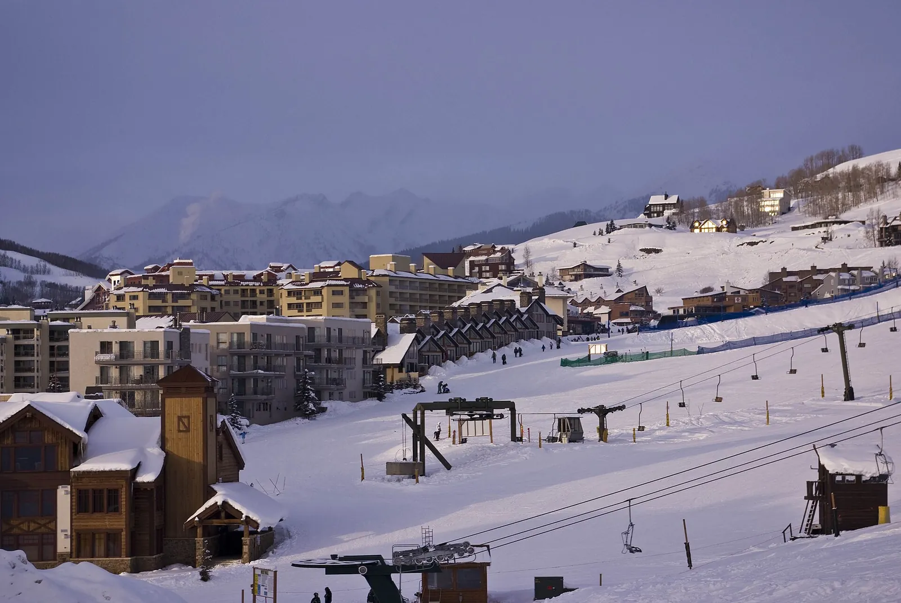

Crested Butte, Mt. Crested Butte, Colorado · Ski conditions
Crested Butte Conditions and Webcams Today
Crested Butte's webcams and kid facts: lessons for kids, no childcare, free buses to the base. Gunnison airport is 30 to 40 minutes away, the resort says.
Researched with AI (Miles Rowan) · sources linked and dated · How we check
Crested Butte's own status
Not open yetOpens Wed, Nov 25 (Crested Butte's hours page, read Nov 17).
Our webcam read
No cam read from us yet. Cam reads show here only when a recent one has passed a separate automated accuracy check.

Cam by cam
The 3 Crested Butte cam views our reader uses (2 names: two base views share one), in our own descriptive words (see Crested Butte's own cam page, as listed in our cam feed Nov 17): Base lift loading area, Summit lift top deck. Once our reads start, each cam's last read time shows here.
Plan the day with kids
- Season and hours: Crested Butte's hours page says winter 2026/27 starts Nov 25, open daily 9am to 4pm. Its arrival page says Nov 23 (no year). No closing date; ski school hours "TBD".
- Childcare: Crested Butte's arrival page says the resort "does not offer childcare services."
- Lessons: Child groups are for ages 7 to 14 (its booking filter says 7 to 15); under 7 ski in smaller ability-based groups, and ages 3 to 4 can also book Cubs private lessons. Kids must be potty trained and wear a helmet.
- Lesson morning: Half day 9:30am to noon; full day 9:30am to 3:30pm, lunch with full-day groups only. Arrive 30 minutes early (60 with rentals). Kids need a lift ticket or pass.
- Where kids meet: The lessons page says the Floral Camp CB flag past the Silver Queen lift; the arrival page says the Magic Carpets by Camp CB. Confirm when you book.
- Helmets: The lessons page says ski school doesn't rent helmets; the arrival page says children's ski school locations do. Bring your own.
- Lift tickets: The home page shows no ticket price; it says tickets "will be limited" and to buy ahead. Its ticket page blocks our reader. Pass holders get 20% off group lessons.
Parking price on Crested Butte's pages, read Nov 17:
- Mountaineer Square garage, day: $30 per vehicle
Heated day parking at the Mountaineer Square garage, as listed on Crested Butte's getting-here page with no season dates beside it. The Main Lot is listed as free for summer 2026 only; winter terms aren't posted. Read Nov 17, 2026.
Lift tickets and lessons: Crested Butte's pages we read show a garage rate but no lift ticket or lesson prices, so we can't sum a family-of-4 day; check live. See Crested Butte lift tickets.
From Crested Butte home page, Crested Butte arrival guide (Basecamp), Crested Butte lessons: arrival and preparation, Crested Butte lift and terrain status, Crested Butte ski and ride lessons: first timers, Crested Butte getting here and parking and Crested Butte hours of operation, read Nov 17.
Getting there from Gunnison and Montrose airports
- Car: Gunnison-Crested Butte airport (GUC) is 30 to 40 minutes away. Montrose is 94 miles: US-50 east to Gunnison, then CO-135 north. US-50 construction can cause delays; check cotrip.org.
- Flights: GUC has American and United nonstops from Dallas, Denver and Houston, the getting-here page says.
- Buses: Mountain Express and the Gunnison Valley RTA are free and drop you at the base. Bustang runs from Denver; no fare posted.
- Airport shuttles: Alpine Express, Dolly's Mountain Shuttle, Rocky Rides and Black Canyon Limo; no fares posted.
If the snow is thin
- Lessons aren't canceled for weather while the resort runs, though it may reschedule them. Cancel 48 hours or more ahead for a full refund; inside 48 hours a single day costs a 50% fee. No refunds for weather, wind or snow levels.
- Off the slopes: town sledding hills (Pyramid Avenue, the Community School), the Trailhead Children's Discovery Museum, sleigh rides and dog sledding. No tubing or skating listed; no hours or prices posted.
- We didn't find a lift ticket weather refund policy on the pages we read; check before you buy.
From Crested Butte ski and ride lessons: first timers and Crested Butte lessons: arrival and preparation and Crested Butte winter activities (updated Oct 2025) and Crested Butte family vacation guide (updated Oct 2025), read Nov 17.
How we read the cams: a program looks at Crested Butte's public webcam pictures and notes only what a picture can show: fresh snow, snow cover, snowmaking, moving lifts, how busy the base looks, visibility and the snow stake. Each read shows its time; after 90 minutes it is marked older, after 6 hours it is hidden. We never say whether terrain is safe, icy, groomed or open; Crested Butte's own report decides that. We don't show the cam pictures or count people.
Sources: Crested Butte mountain cams · Crested Butte hours of operation · Crested Butte ski and ride lessons: first timers · Crested Butte getting here and parking · Crested Butte home page · Crested Butte arrival guide (Basecamp) · Crested Butte lessons: arrival and preparation · Crested Butte lift and terrain status (read Nov 17). We haven't skied Crested Butte.